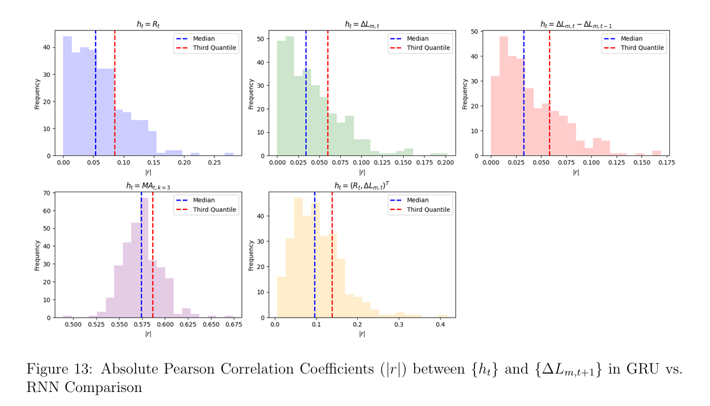

Financial & Data Tools
Excel, SQL, Power BI (Power Query/M & DAX), Dynamics 365 Finance & Operations, Azure Analysis Services
The languages, platforms, and methods I use to turn data into decisions.
Excel, SQL, Power BI (Power Query/M & DAX), Dynamics 365 Finance & Operations, Azure Analysis Services
DAX, Power Query,Python, R, LaTeX
Git, GitHub, Visual Studio / VS Code, SQL Server Management Studio, DAX Studio, Databricks, Claude Code,Jupyter Notebook, R Studio
Microsoft Azure
Figma, Canva, Claude / Claude Code, Google Analytics
Where my curiosity and academic background meet real-world data problems.
In my recent project, I analyzed global wheat-trading datasets recorded daily, leveraging streaming data analytics to track vessel movements and back corrections in real time. My curiosity in streaming data analytics has deepened, especially after attending the webinar "How Live Commodity Data Adds Value," presented by AXSMarine — illuminating how live shipping and commodity data enable swift, fact-based assessments and the use of indicators to support decision-making.
One of my favorite courses during my master's program was "The Statistical Analysis of Time Series," taught by my thesis supervisor. We explored methods for trend and seasonal decomposition using moving averages and exponential smoothing, and employed statistical tests like the Augmented Dickey-Fuller test to identify trends and seasonality — providing a solid foundation for my thesis.
"The correlation of two variables does not show the direction of impact." My primary domain of interest lies in Statistical Inference, where I focus on drawing reliable conclusions from data through rigorous analysis. Throughout my academic journey, I have delved into hypothesis testing, confidence intervals, and estimation techniques, applying statistical inference to derive actionable insights across various applications.
I have experience manipulating large datasets and applying statistical methodologies to solve practical business problems. My 1st-place Kaggle finish in income-level prediction, along with projects in Stock Price Prediction and Product Review Analysis, have equipped me with the expertise to apply state-of-the-art ML and NLP techniques to extract valuable insights from large datasets.
Data analysis, statistical modeling, and machine learning work across FinTech, e-commerce, health, and trade.
Claude Code · Visual Studio Code
This project builds an interactive web dashboard to analyze a FinTech Project Management dataset from a European payment solutions company. The dataset covers how product development projects (e-wallets, tap-to-pay systems, online payment APIs) are planned, executed, and monitored across multiple European cities and departments.
Python · Power BI
The analysis focuses on two key areas: Revenue Insights — examining sales performance, customer demographics, and product contributions to overall revenue — and Fraud Analysis — identifying fraudulent transactions, quantifying revenue loss, and uncovering patterns across time, location, and customer segments most affected.
Python · Power BI
I conducted a global health medivac statistical analysis by integrating and cleaning data from Workday, Cority, and internal repositories using Python. The cleaned data was visualized in Power BI to analyze key occupational health indicators — ESLR, IR, ISR, and DLPIR — providing insights into sick leave trends across duty stations and supporting informed decision-making. Advanced DAX functions were applied for complex calculations.
Python · Power BI
This analytical report is designed for the Regional Boarding Stakeholders meeting per region. Instead of loading all data into Power BI at once, I created a dynamic report using data parameters, loading only the necessary regional data to reduce processing time and memory usage — ensuring faster loading times, enhanced user experience, and greater flexibility for targeted filtering.
Python · Power BI
In this project, I collected data from multiple sources including Workday, Cority, and internal repositories, then globally integrated and cleaned it using Python. Key occupational health indicators (ESLR, IR, ISR, DLPIR) were analyzed to identify sick leave patterns and trends in diagnoses across duty stations. Advanced DAX functions were employed for complex calculations and deeper insights.

Python · SQL · Databricks · Microsoft Azure · Power BI
This project monitors real-time datasets to identify trading countries and ports with the highest frequency of back corrections. Using Azure Data Lake for storage, data is ingested into Databricks where Python and SQL process and transform the raw data. The processed data feeds Power BI dashboards that provide real-time visualizations of trading corrections for actionable stakeholder insights.

Python
For this project, I worked with data on regional trade agreements (RTAs) and bilateral trade flows. RTAs are binding agreements establishing preferential trade regimes between two or more trading partners. The goal is to uncover key insights regarding the evolution and impact of RTAs over time, their types, and their effect on trade between countries.

Python
Implemented in collaboration with Effixis, a data science company specializing in NLP solutions. A large dataset of customer reviews — including textual reviews, product categories, and satisfaction ratings — was analyzed using Python and NLP algorithms such as RNN, LSTM, GRU, Transformers, and pre-trained models for sentiment analysis and machine learning.

Python · R
This master's thesis focuses on using the Giacomini-White (GW) test to compare predictive ability between two competing forecasting models. The project combines time series analysis and advanced machine learning, utilizing statistical tests, Monte Carlo Simulation, and Sequential Learning Models, with an application to financial data.

Python
I achieved 1st rank in a Kaggle competition using data from the US Census Bureau, predicting income levels (high or low) based on demographic predictors. This task utilized ML algorithms including Logistic Regression, Random Forest, XGBoost, LGBM, CatBoost, and a hard-max-vote ensemble as the final submission.

Python
This project reflects my personal interest in financial trading. I used LSTM and XGBoost models to forecast the S&P 500 index and other stock prices, demonstrating applied machine learning in the context of financial markets.
I am driven by the will to finish what I start — and finish it well. With a strong commitment to excellence and problem-solving, I bring focus and determination to every project. Please feel free to reach out if you have a question, an opportunity, or just want to connect.